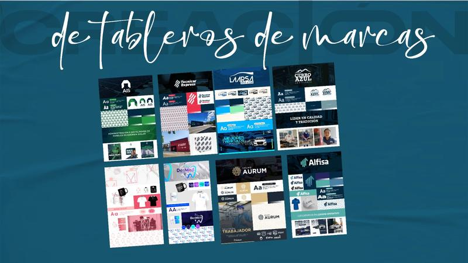

Nos referimos al uso estratégico de redes sociales para construir, gestionar y mantener una comunidad en línea en torno a una marca o persona.
Es un formato audiovisual que nos permite transmitir mensajes de forma dinámica y atractiva, ideal para campañas publicitarias, educativas o informativas.
Es el arte y técnica de capturar imágenes que transmiten emociones, identidad de marca y profesionalismo en productos, personas o eventos.


Conjunto de elementos visuales, verbales y emocionales que identifican a una organización o persona, diferenciándola de otras y conectándola con su audiencia.
